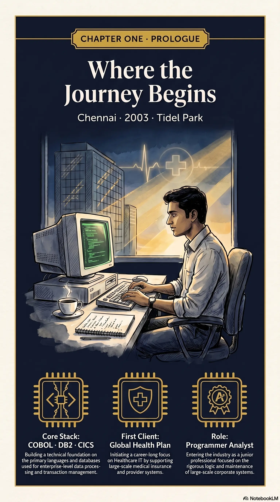
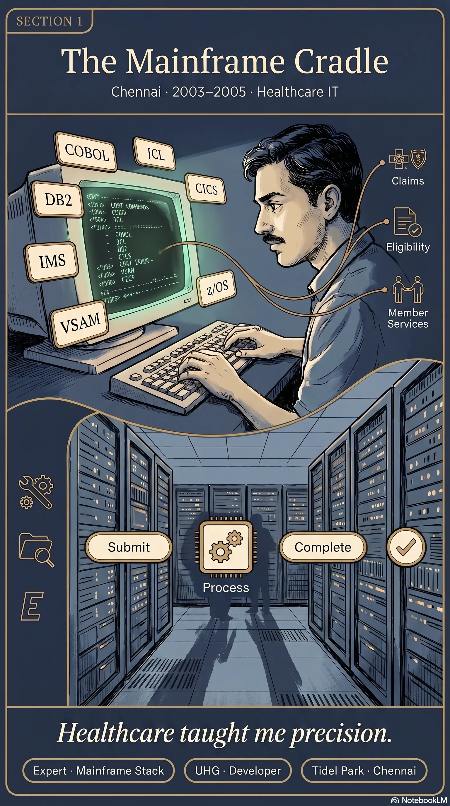
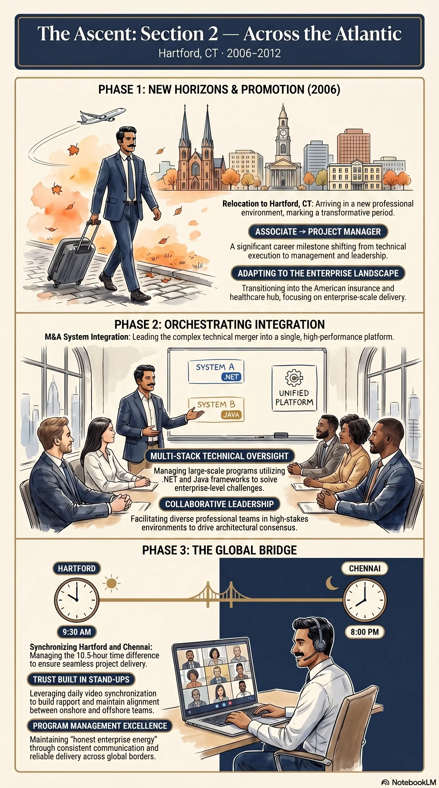
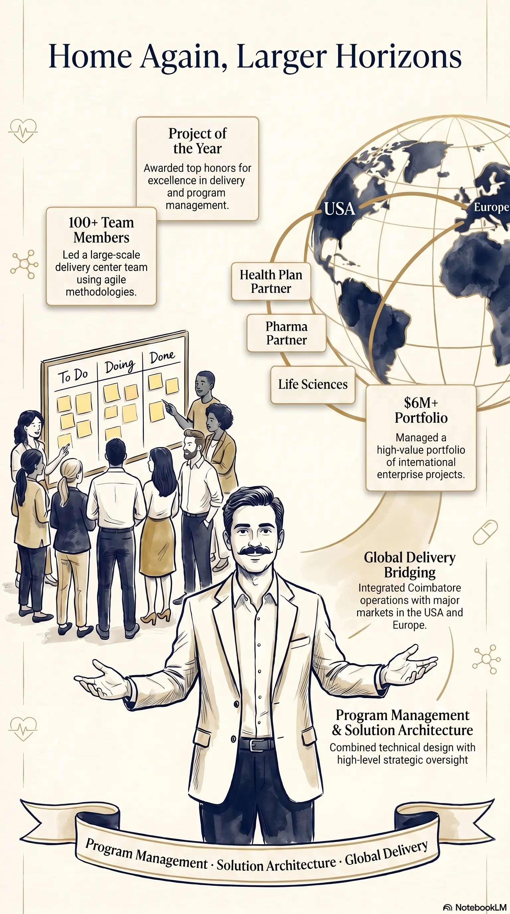
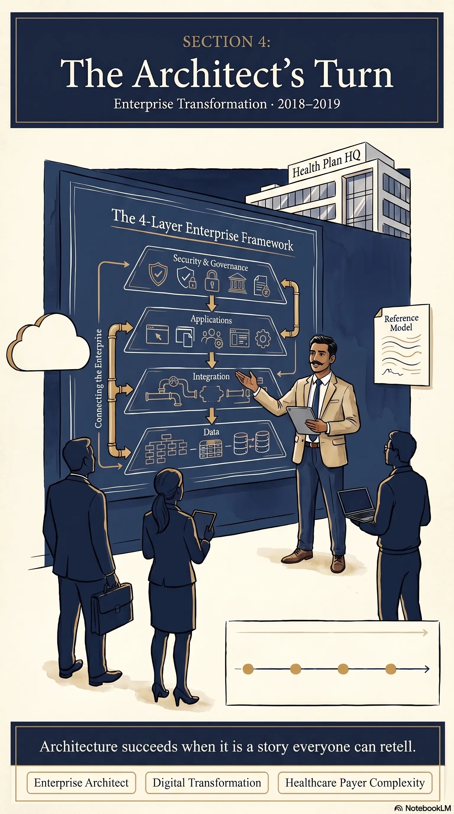
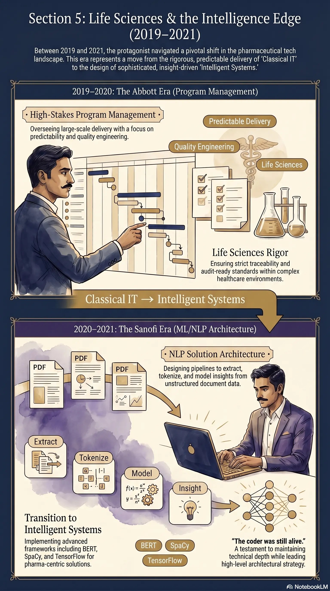
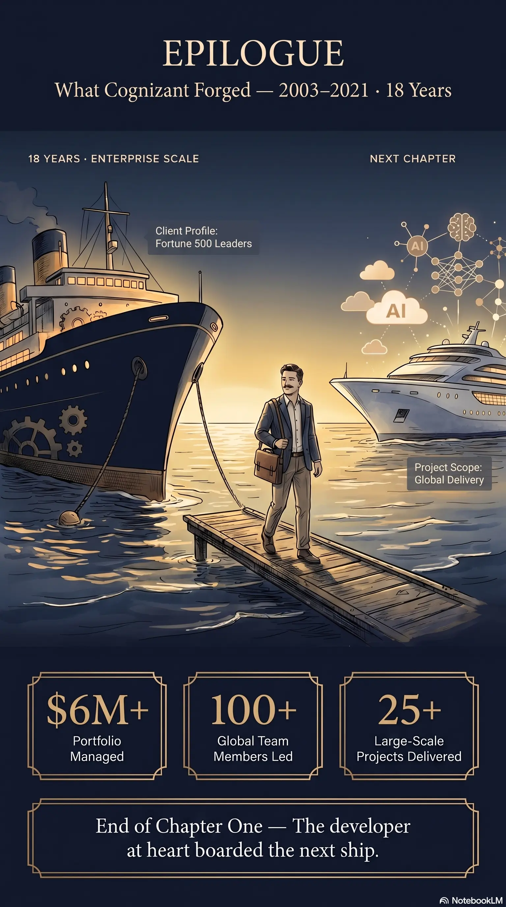

Chapter One
Cognizant Years
Program Manager / Enterprise Architect · Sep 2003 – Apr 2021 · India & USA
Where the Journey Begins
Every long ascent has a first foothold. Mine was not a boardroom or a product launch stage — it was a terminal glow at Tidel Park, Chennai, in 2003.
I joined Cognizant Technology Solutions as a Programmer Analyst, stepping into the world of core mainframe engineering: COBOL, DB2, IMS DB, CICS — the bedrock languages of enterprise healthcare at scale. UnitedHealth Group was my first client. I was not yet steering multi-million-dollar portfolios; I was learning what it meant to make systems that could not afford to fail.
Those early years taught me something I have never unlearned: respect the machine, respect the data, and respect the person on the other side of the screen whose care depends on both.

The Mainframe Cradle
Picture a young developer in a humming operations floor — green screens, batch jobs, the quiet seriousness of healthcare IT. This was my classroom.
I lived inside the mainframe stack until it became second nature:
- Programming: COBOL, JCL, CICS, REXX
- Data & persistence: IMS DB/DC, DB2, VSAM
- Environment & tooling: z/OS, RACF, Endevor, Xpeditor, FileAid
I was not observing enterprise systems from a distance — I was inside them, debugging production flows, understanding how a single miscoded paragraph could ripple across claims, eligibility, and member services.
Healthcare taught me precision before it taught me politics. Cognizant gave me structure; UHG gave me purpose. Together they forged the craftsman I still am today — the one who believes technology should never be a constraint, only a canvas.
By 2005, I had earned something more valuable than a title: the confidence to learn anything the next chapter demanded.

Across the Atlantic
In 2006, the journey crossed an ocean.
Hartford, Connecticut became home — and UnitedHealth Group became a masterclass in growth. The healthcare industry was in motion: mergers, acquisitions, integration programs, and the constant pressure to unify systems that were never designed to speak the same language.
I arrived as an associate and left this chapter as a Project Manager — but the real story is what happened in between.
I worked shoulder-to-shoulder with business and technology leaders through UHG's M&A landscape, gradually expanding from hands-on development into system design, delivery ownership, and client-facing program leadership. Mainframe depth remained my foundation; .NET and Java entered the picture as the enterprise stack widened.
Thousands of miles from Chennai, I learned that trust is built in stand-ups, status calls, and the moments you tell a stakeholder the truth before they ask for it.

Home Again, Larger Horizons
By 2012, the compass pointed home — Coimbatore — but the responsibility had grown far beyond a single desk.
I returned to India as offshore delivery lead at senior management level, managing larger portfolios for UnitedHealth Group, Sanofi, and Abbott Laboratories. The role was orchestrate the outcome across time zones, vendors, architects, and hundred-person rhythms.
Portfolios grew. Peak headcount crossed a hundred. Revenue responsibility touched $6M+ annually. RFPs were won. A Project of the Year award arrived — not as decoration, but as evidence that transparency and discipline scale.

The Architect's Turn
In 2018, I deliberately changed altitude.
I moved into an Enterprise Architect role for a multi-year transformation program with EmblemHealth — one of the most formative architectural chapters of my Cognizant years.
This was enterprise application architecture at full span: roadmaps, reference models, integration patterns, governance forums, and the painstaking alignment of business capability maps with technical reality.
The technologist in me stayed hands-on: AWS Solution Architect certification, cloud and hybrid architecture, full-stack sensibility, test-driven discipline. The leader in me learned that architecture fails when it is slides without sponsors — and succeeds when it is a story everyone can retell.

Life Sciences & the Intelligence Edge
Abbott Laboratories (2019–2020) — Program Manager. I led program management for large-scale delivery — modernization, integration, quality engineering, and the unglamorous excellence of predictable releases. Life sciences rewards traceability, auditability, and teams that can repeat success.
Sanofi (2020–2021) — ML / NLP Solution Architect. Here the arc bent toward the future. I applied machine learning and natural language processing to real enterprise problems — Python ecosystems, NLP libraries, document intelligence, and the toolchain that would soon explode into the GenAI era.
The coder was still alive. The architect was still curious. The program manager still kept the trains on time.

What Cognizant Forged
Eighteen years at Cognizant were not a single job — they were a curriculum written in production incidents, client trust, and teams that grew because someone chose transparency over theatre.
When I left in April 2021, I was not leaving the craft — I was carrying it to a smaller hull with a bigger horizon: a startup SaaS product where I would build the cloud from zero and, soon after, teach machines to think alongside strategists.
The developer at heart boarded the next ship.
